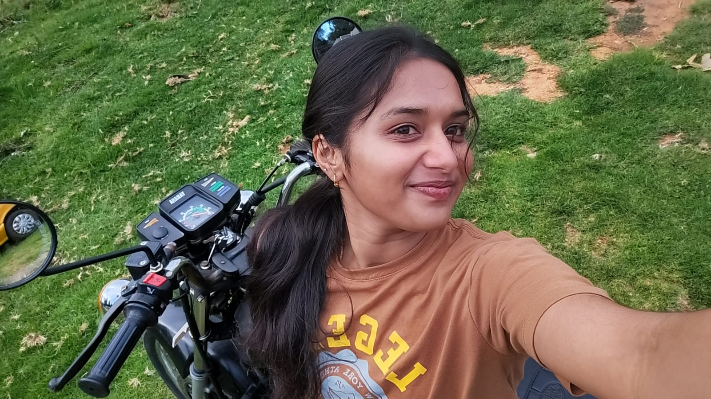
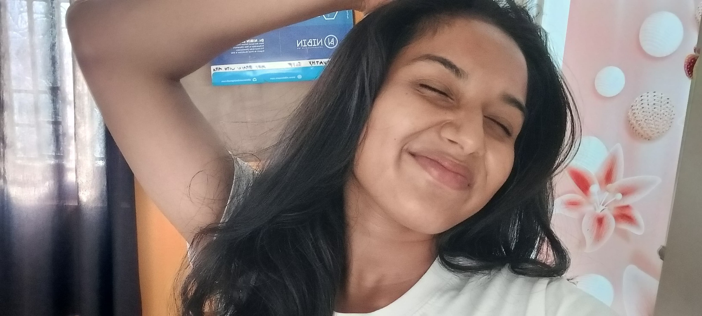
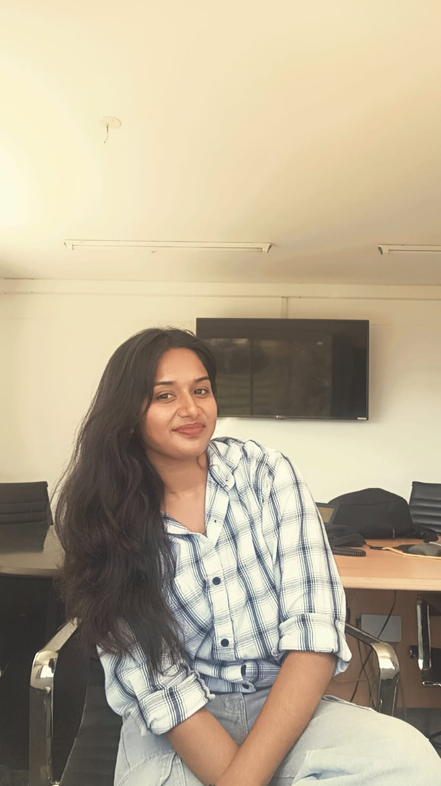
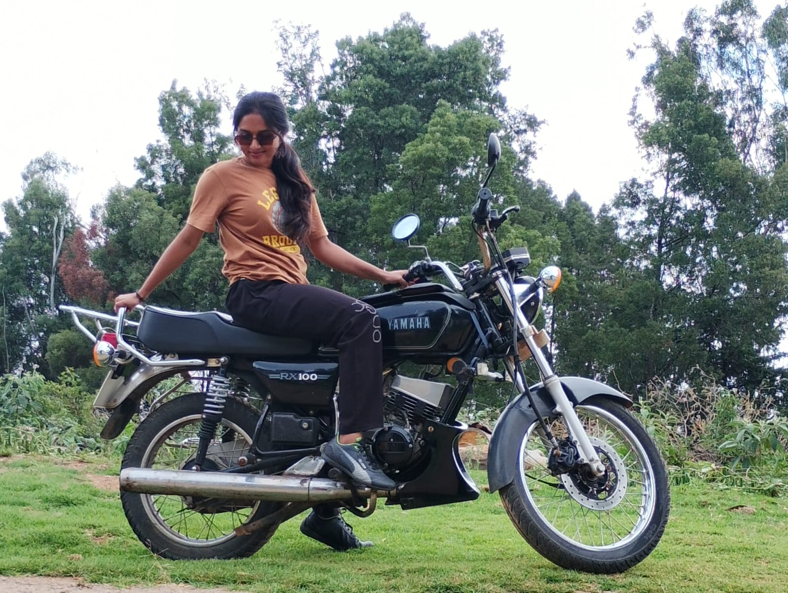

The Tale
of Praniksha
Not every story needs a castle. Sometimes, it only needs a person whose presence makes another person's world feel a little more like home.
She grew.
She wandered.
She became herself.
The photographs don't tell every story. They only leave little windows open — a smile here, a road there, a quiet moment, another version of the same girl. And somehow, all those little moments became Praniksha.
She was collecting a life.



Places
Everywhere she went became another little piece of the story.
Adventures
Some memories are quiet. Others arrive with a road, a bike, and somewhere to go.
Twenty
This isn't the end of growing up. It's the beginning of choosing the life she wants.
The little moments
The ordinary days are often the ones we remember longest.
The changing girl
Different places, different seasons — still unmistakably her.
The story continues
Twenty is not an ending. It is the first page of another volume.
Some people
are loved.
Some are felt.
Praniksha, there are things that are difficult to put into a birthday wish. Like how someone's presence can quietly become part of the rhythm of your life — until you notice how different the room feels when they aren't there.

Your care
It is one of the things I genuinely love about you — the way you care without needing a grand reason.
Your presence
You don't have to do anything extraordinary. Being there is already something I value more than I probably say.
Your place
You never have to prove that you belong in my life. You already do. Completely.
Dear Praniksha,
I wanted to give you something you could keep. Not something that would disappear after one birthday, but something you could come back to whenever you wanted.
Because there are some people whose importance is almost impossible to explain. They don't arrive with a grand announcement. They simply become part of your everyday life until, one day, you realise that you cannot imagine the story without them.
You are that person for me.
You're my younger sister, yes. But you're more than just that word. Somewhere along the years, your presence became part of what feels familiar to me — part of the little things that make life feel like home.
It isn't only the way you care. It is the way you exist in my life: the conversations, the random moments, the laughter, the arguments, the stupid things we remember, and even the quiet moments where neither of us needs to say much.
Sometimes I don't realise how much I value the simple fact that you're there until I stop and think about it.
Tomorrow you turn 20. And I hope this next chapter gives you beautiful places, good people, ridiculous amounts of laughter, courage when things get difficult, and the freedom to become whoever you want to be.
But if life ever becomes heavy, remember this: you never have to earn your place in my life. You already have it.
Thank you for being my sister. Thank you for the care you give. Thank you for every memory. And most of all, thank you for simply being My Vaalu.
Some people are chapters in our lives. You're part of the story itself.
Happy Birthday, Praniksha
Twenty years of your story. And somehow, this feels less like an ending and more like the moment the book gets bigger.
Your care matters. Your laughter matters. Your memories matter.
But more than anything — your presence matters.
You are loved, you are valued, and you have a permanent place in the story.